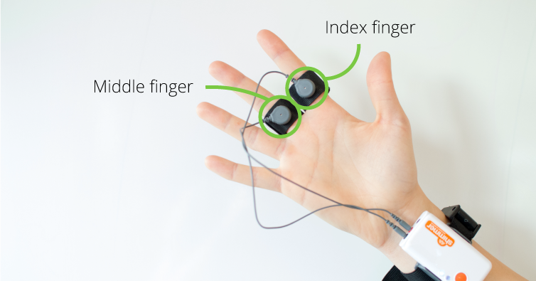
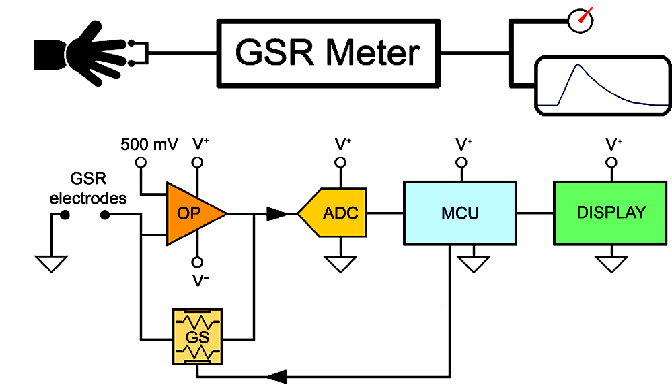

Anatomy
It consists of four main parts: Sweat glands, Electrodes, Amplifier, Recording setup
Sweat glands: These are the small, coiled glands located in the skin that produce sweat in response to emotional or physical stress.
Electrodes: These are the sensors that are attached to the skin to measure changes in the electrical conductance of the skin. There are two types of electrodes used in GSR measurements: the electrodes that measure the skin conductance level (SCL) and the electrodes that measure the skin conductance response (SCR).
Amplifier: This is the electronic device that amplifies the electrical signal produced by the electrodes.
Recording device: This is the device that records the amplified electrical signal and displays it as a waveform or a graph.
Working
- A GSR sensor is a non-invasive device that requires minimum preparation/calibration.
- The operation is fairly straightforward. Two electrodes are placed where there is high density of the eccrine sweat glands, such as fingers, palms or the soles of the feet. A low voltage is applied. The skin conductance is computed by measuring the current flowing between the electrodes.
- The fingers, palms and foot soles are the parts of the body that respond to emotional and other psychological stimuli. As shown in Exhibit 20, the middle and index finger are ideal locations to place the electrodes, typically on the non-dominant hand so that respondent is free to use the dominant hand.
- If respondents need to use their fingers, such as for typing, then the palm is an option, or else the inner side of the sole of the foot.
- As can be seen from the exhibit, the electrodes are mounted on Velcro straps. The device is easily worn by fastening the straps. In addition to the electrodes, the device comprises of an amplifier to boost the signal, and a digitizer to convert from the analog signal to digital.
Types

There are several types of stethoscopes, including:
- Cardiology stethoscope: This stethoscope is designed for use by cardiologists and other specialists who need to hear faint heart sounds. It typically has a larger chestpiece and longer tubing than a standard stethoscope.
- Pediatric stethoscope: This stethoscope is designed for use on infants and children. It typically has a smaller chestpiece and shorter tubing than a standard stethoscope.
- Veterinary stethoscope: This stethoscope is designed for use on animals. It may have a specialized chestpiece and tubing that is more durable than a standard stethoscope.
- Sprague Rappaport Stethoscope: It is five stethoscopes in one for a full range of diagnostic applications and is traditionally trusted to detect faint heart sounds and murmurs. This classic design allows healthcare professionals to assess adult, pediatric, and infant patients using just one stethoscope.
- Select lightweight stethoscope: The 3M Littmann Lightweight II S.E. Stethoscope is an ideal entry-level instrument, with a tunable diaphragm, dual-sided chestpiece, and reliable acoustic performance. Its teardrop shape makes auscultation around blood pressure cuffs easier. The colors shown online are approximations.
Block diagram of stethoscope
Applications
- Biofeedback therapy: GSR can be used in biofeedback therapy to help individuals learn how to control their physiological responses to stress and anxiety.
- Lie detection: GSR has been used as a component of polygraph tests to detect changes in physiological responses that may be indicative of lying.
- Market research: GSR is used in market research to measure the emotional response of consumers to products and advertising.
- Human-computer interaction: GSR can be used in human-computer interaction to detect changes in a user's emotional or cognitive state, and to adapt the computer interface accordingly.
- Mental health: GSR can be used in mental health to assess emotional reactivity and arousal levels in individuals with conditions such as anxiety disorders and depression.